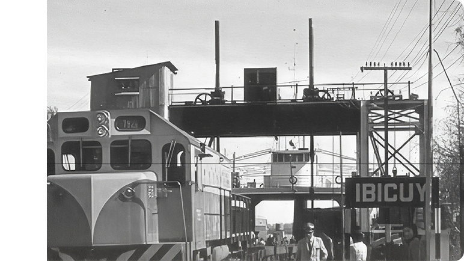
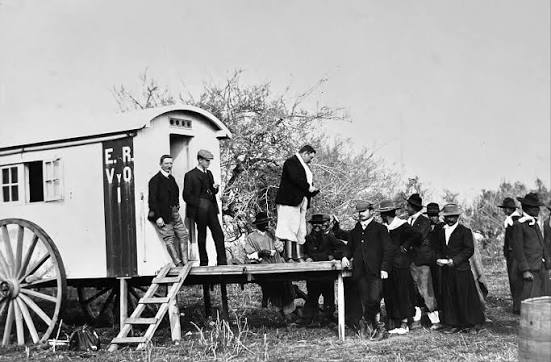
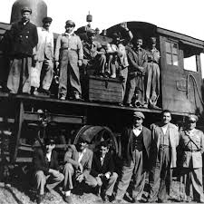
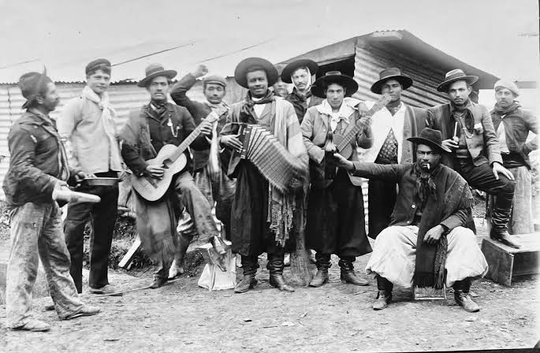

La historia de Ibicuy está relacionada con el ferrocarril, el puerto y las formas de conexión que transformaron el territorio.




Cerro Blanco
Los primeros registros mencionan el paraje Cerro Blanco, cercano al actual Ibicuy. Sus antecedentes forman parte de la historia de este territorio junto al río.
.Los inicios del puerto
El desarrollo portuario comenzó a transformar la región, impulsando el transporte de mercaderías y abriendo nuevas oportunidades para el crecimiento de la comunidad.
La llegada del ferrocarril
La llegada del primer tren marcó un momento importante para Ibicuy, fortaleciendo la conexión ferroviaria y el desarrollo de la zona.
Conexión con Zárate
Los ferryboats permitieron transportar trenes, vagones y pasajeros a través del río Paraná, conectando Ibicuy con la provincia de Buenos Aires.
El fin de una etapa
La puesta en funcionamiento de la conexión ferrovial Zárate-Brazo Largo marcó el final de la histórica conexión mediante ferryboats y una transformación en la actividad ferroviaria y portuaria.
Raíces que siguen vivas
A orillas del río se conservan los restos del antiguo puente de transferencia de los ferryboats, testimonio de una época que conectó regiones. Hoy, este patrimonio es un punto de interés turístico e histórico. Ibicuy busca mantener vivas sus raíces ferroviarias y portuarias, preservando la memoria de su pueblo.
La Estación Holt conserva elementos que permiten reconocer parte de la historia ferroviaria de la zona, como su antigua señalización, plataforma elevada y estructura vinculada al funcionamiento ferroviario.
Imagén de restos de que se encuentran en la Plazoleta de Turismo